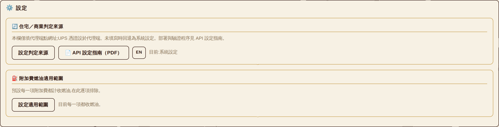
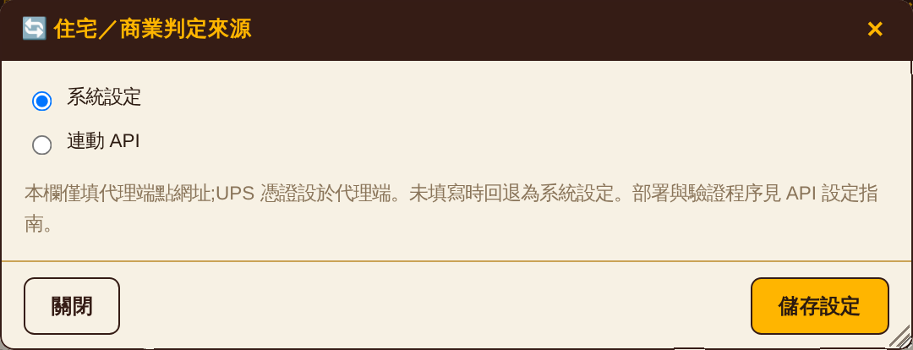
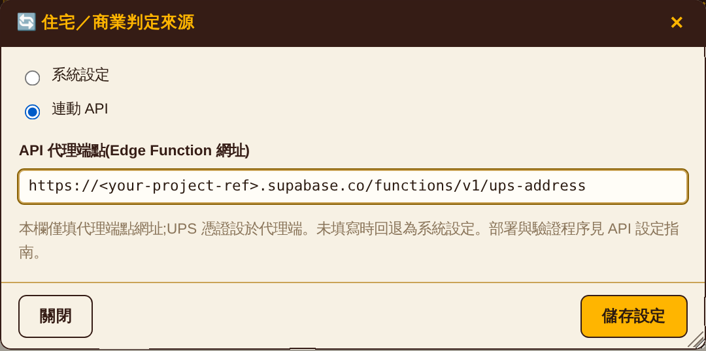

系統預設依帳單代碼、服務名稱與帳單歷史判定各件貨物之住宅／商業屬性。啟用本功能後,改由 UPS 官方地址驗證服務對送達地址進行分類,回傳住宅或商業。
住宅與商業之費率不同,分類結果直接影響計價金額。導入前請先詳閱第 7 節。
用戶端無法直接呼叫 UPS API:UPS 要求 OAuth 認證,且未提供跨來源存取(CORS)。故於 Supabase Edge Function 部署代理服務,由代理持有憑證並代為呼叫。
回傳值:R 住宅、C 商業、U 無法判定。回傳 U 或呼叫失敗時,計價流程回退至系統判定邏輯,不中斷作業。
UPS Client ID 與 Client Secret 僅以環境變數形式存放於代理服務,用戶端設定介面不提供輸入欄位。
CFG.raw,該物件會存入瀏覽器 localStorage、同步至帳號設定紀錄,並包含於匯出的設定檔中。憑證若置於此處,將隨上述三種載體擴散。此外,用戶端受 CORS 限制無法直接呼叫 UPS,即使填入憑證亦無作用。
部署前須具備下列三項。三者用途與取得管道均不相同,缺其一則第 3 節無法完成。
用途:取得呼叫 UPS API 所需的 Client ID 與 Client Secret,並訂閱 Address Validation 產品。UPS 以應用程式為單位核發憑證,一組憑證對應一個 UPS 帳號的用量配額。
| 項目 | 說明 |
|---|---|
| 取得管道 | developer.ups.com → Apps → Add App |
| 必要條件 | 一組有效的 UPS 帳號號碼,即實際出貨並產生帳單之帳號 |
| 須訂閱的產品 | Address Validation。未訂閱時憑證本身仍為有效,惟呼叫端點將回 502 UPS 403 |
| 核發內容 | Client ID 與 Client Secret。Secret 僅於建立時顯示一次,請即時保存 |
| 環境 | 測試 wwwcie.ups.com、正式 onlinetools.ups.com。兩者共用同一組憑證 |
用途:代理服務(Edge Function)部署於 Supabase 專案之上,並由該專案保管 UPS 憑證。
| 項目 | 說明 |
|---|---|
| 所需角色 | 該專案的 Owner 或 Developer。僅具 Read 權限者無法部署函式,亦無法寫入環境變數 |
| 專案識別碼 | 專案設定頁(Settings → General)的 Reference ID,即端點網址中的子網域。本文件的指令中以 <your-project-ref> 表示,執行時換成你自己的 |
| 需取得的金鑰 | anon(publishable)key,用於 4.2 之測試。這把金鑰設計上即為公開值,寫在你部署的 auth-config.js 內;其安全性由資料表的 RLS 與函式權限保障,不得以 service_role 金鑰替代 |
| 確認方式 | 主控台左側可見 Edge Functions 項目,即表示權限充足 |
用途:部署函式與寫入環境變數。該二項作業均無法於網頁主控台完成,必須使用 CLI。
| 平台 | 安裝指令 |
|---|---|
| macOS | brew install supabase/tap/supabase |
| Windows | scoop install supabase |
| 跨平台(Node) | npm install -g supabase |
安裝後確認版本並完成登入:
supabase --version supabase login
supabase login 將開啟瀏覽器完成授權;授權後,CLI 即以該帳號之權限執行。本步驟每台電腦執行一次即可。
下列四項均成立後,始得進入第 3 節。
| # | 項目 | 確認方式 |
|---|---|---|
| 1 | UPS 應用程式已建立,並已訂閱 Address Validation | 開發者主控台的 App 詳細頁列出該產品,且狀態為已核准 |
| 2 | 已保存 Client ID 與 Client Secret | 兩者均為可讀取之字串;Secret 遺失須重新產生 |
| 3 | 具備 Supabase 專案的部署權限 | 主控台可見 Edge Functions 項目 |
| 4 | CLI 已安裝並登入 | supabase --version 有輸出,且 supabase login 已完成 |
developer.ups.com 建立應用程式。POST /api/addressvalidation/v2/3,路徑末端的 3 為 request option 3,即「地址驗證 + 地址分類」。應用程式僅訂閱 Rating 或 Tracking 不符需求,驗證階段將回傳 502 UPS 403。
# 授權 CLI(將開啟瀏覽器) supabase login # 於儲存庫根目錄執行,產生 supabase/config.toml supabase link --project-ref <your-project-ref>
儲存庫目前不含 config.toml,首次部署必須先執行連結。
supabase secrets set \ UPS_CLIENT_ID=<client-id> \ UPS_CLIENT_SECRET=<client-secret> \ UPS_BASE=https://wwwcie.ups.com
| 變數 | 說明 |
|---|---|
| UPS_CLIENT_ID | 必填 |
| UPS_CLIENT_SECRET | 必填 |
| UPS_BASE | 選填。預設 https://onlinetools.ups.com(正式環境)。首次部署建議指向 https://wwwcie.ups.com(CIE 測試環境),不消耗正式配額 |
| SUPABASE_URL SUPABASE_ANON_KEY | 無須設定,由平台自動注入 |
supabase functions deploy ups-address
環境變數變更後無須重新部署,即時生效。
代理服務對不同失敗原因回傳相異之狀態碼,可依序驗證以定位問題層級。請依 4.1 至 4.3 之順序執行,不得略過。
於未附認證資訊之情況下呼叫:
curl -i -X POST \
"https://<your-project-ref>.supabase.co/functions/v1/ups-address" \
-H "Content-Type: application/json" -d "{}"
| 回應 | 判讀 |
|---|---|
| 401 not signed in | 部署成功。代理正確拒絕未經認證的請求 |
| 404 | 函式未部署,返回 3.4 |
於 Supabase 主控台 Authentication → Users → Add user 建立測試帳號(電子郵件與密碼,並標記為已確認),再取得權杖:
curl -X POST \
"https://<your-project-ref>.supabase.co/auth/v1/token?grant_type=password" \
-H "apikey: <anonKey,見 auth-config.js>" \
-H "Content-Type: application/json" \
-d '{"email":"<email>","password":"<password>"}'
由回應中取出 access_token 欄位。
curl -X POST \
"https://<your-project-ref>.supabase.co/functions/v1/ups-address" \
-H "Authorization: Bearer <access_token>" \
-H "Content-Type: application/json" \
-d '{"address":"1600 Pennsylvania Ave NW","city":"Washington",
"state":"DC","postal":"20500","country":"US"}'
| 回應 | 判讀與處置 |
|---|---|
| 200 {"class":"R"|"C"|"U"} | 驗證通過,可進行 4.4 |
| 500 UPS credentials not configured | 環境變數未設定,返回 3.3 |
| 502 UPS 401 | UPS 憑證錯誤,核對 Client ID 與 Secret |
| 502 UPS 403 | 應用程式未訂閱 Address Validation,返回 3.1 |
檢視執行紀錄:
supabase functions logs ups-address
supabase secrets set UPS_BASE=https://onlinetools.ups.com
路徑:設定 分頁 → 住宅／商業判定來源。



本節為代理端點之介面定義,供需自行整合或排查請求層問題者參考。一般設定作業無須閱讀本節。
| 項目 | 值 |
|---|---|
| 方法 | POST。其餘方法回 405;OPTIONS 供 CORS 預檢 |
| 路徑 | /functions/v1/ups-address |
| 必要標頭 | Authorization: Bearer <access_token> |
| Content-Type: application/json | |
| CORS | 允許來源 *,允許標頭 authorization, content-type |
請求主體欄位如下。address 與 postal 至少須提供其一,否則回 400。
| 欄位 | 型別 | 說明 |
|---|---|---|
| address | string | 街道地址第一行 |
| city | string | 城市 |
| state | string | 州別代碼 |
| postal | string | 郵遞區號,代理端截取前 5 碼 |
| country | string | 國別代碼,預設 US |
| name | string | 收件人名稱,選填,轉為 UPS 的 ConsigneeName |
{ "class": "R" | "C" | "U", "description": "<UPS 之分類說明>" }
| class | UPS 原始碼 | 意義 |
|---|---|---|
| R | AddressClassification.Code = 2 | 住宅 |
| C | AddressClassification.Code = 1 | 商業 |
| U | AddressClassification.Code = 0 或缺值 | UPS 無法判定 |
失敗時回傳 {"error": "<訊息>"},狀態碼見 7.1。502 另附 detail 欄位,內容為 UPS 回應本文之前 300 字元。
U。
用戶端於每次重算前呼叫本端點,其行為如下:
| 項目 | 行為 |
|---|---|
| 去重 | 同一批貨件先經地址正規化後歸併,相同地址僅呼叫一次 |
| 併發上限 | 6;避免觸發代理端或 UPS 之速率限制 |
| 快取 | 成功結果以地址為鍵持久保存,後續重算不重複呼叫 |
| 失敗處理 | 失敗結果不寫入快取。本次回退系統判定;設定修正後,下次重算自動重試 |
| 未設端點 | 不發出任何請求,全數回退系統判定,並於畫面提示端點未填寫 |
U,則端點填寫錯誤、函式未部署、權限未設定等情形,將被永久記錄為「無法判定」;設定修正後亦不再重試,須手動清除瀏覽器儲存。本行為已明確排除。
| 項目 | 值 |
|---|---|
| 端點 | {UPS_BASE}/api/addressvalidation/v2/3 |
| requestoption | 3(Address Validation + Address Classification) |
| 授權 | client_credentials,經 /security/v1/oauth/token |
| 權杖重用 | 存於函式模組層,至到期前 60 秒為止重複使用 |
| 追蹤標頭 | transId(每次請求之 UUID)、transactionSrc: ups-reprice |
auth.getUser() 驗證呼叫者為有效的 Supabase 使用者。若你的系統以本機帳號模式運行(帳號寫在 index.html,不建立 Supabase 工作階段),則所有請求將回傳 401,計價全數回退至系統判定 —— 此時第 5 節之設定填了亦無作用。
此為認證層之前提,與第 3、4 節無涉:該二節所驗證者為代理服務與 UPS 憑證,與用戶端採用何種認證方式無關。故縱使認證模式尚待切換,第 3、4 節仍應先行完成 —— 其成果為可重複使用之基礎設施,不因日後切換而失效。第 5 節之設定,須於認證模式為 Supabase 帳號後方能生效。
若各使用者需使用各自之 UPS 配額,代理服務須改為依呼叫者身分查詢對應憑證:憑證存放於僅伺服器端可讀取之資料表,代理以已驗證之使用者身分取得該筆憑證。端點網址仍為全體共用。此模式的前提同樣為具備真實使用者身分。
priceShipment() 中,API 回傳結果之優先序高於帳單代碼與帳單歷史。凡 API 能夠判定之貨件,其住宅／商業分類均以 API 結果為準,包含帳單已載明住宅代碼者。
啟用後受影響者,非僅原判定不確定之少數貨件,而係全部可判定貨件,計價結果將隨之變動。
建議程序:先於單一帳號啟用,以同一期帳單分別於啟用與停用狀態執行重算,比對總額與住宅／商業筆數差異,確認 UPS 地址分類與帳單代碼之不一致比例後,再行推廣。
| 畫面訊息 | 成因與處置 |
|---|---|
| 已選取「連動 API」,但未填寫代理端點 | 端點欄位為空,見第 5 節 |
| API 代理呼叫失敗(HTTP 401) | 無有效認證工作階段,見 7.1 |
| API 代理呼叫失敗(HTTP 404) | 端點網址錯誤或函式未部署,見 3.4 |
| API 代理呼叫失敗(HTTP 500) | 代理端 UPS 憑證未設定,見 3.3 |
| N 個地址呼叫失敗 | 部分請求失敗,該部分回退系統判定。失敗結果不寫入快取,下次重算自動重試 |
| API 未回傳任何住宅／商業分類 | UPS 對該批地址均回傳 U(無法判定) |
| 已選取「連動 API」,面板仍顯示「系統設定」 | 端點未填寫;面板顯示實際生效之來源,見第 5 節 |
| 狀態碼 | 層級 | 處置 |
|---|---|---|
| 404 | 函式未部署 | 2.4 |
| 401 | 呼叫者未認證 | 7.1 |
| 500 | 代理端未設 UPS 憑證 | 2.3 |
| 502 UPS 401 | UPS 憑證錯誤 | 2.1 |
| 502 UPS 403 | UPS 產品未訂閱 | 2.1 |
| 200 | 正常 | — |